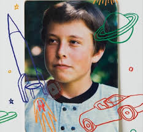

go to elon musk wikipedia
Childhood and Family
Elon Reeve Musk was born on June 28, 1971, in Pretoria, South Africa.His mother is Maye Musk (née Haldeman), a model and dietitian born in Saskatchewan, Canada, but raised in South Africa. His father is Errol Musk, a South African electromechanical engineer, pilot, sailor, consultant, and property developer who was once a half owner of a Zambian emerald mine near Lake Tanganyika. Musk has a younger brother, Kimbal (born 1972), and a younger sister, Tosca (born 1974). His maternal grandfather, Joshua Haldeman, was an American-born Canadian, and Musk has British and Pennsylvania Dutch ancestry.The family was very wealthy in Elon's youth; Errol Musk once said, "We had so much money at times we couldn't even close our safe". After his parents divorced in 1980, Musk mostly lived with his father in Pretoria and elsewhere, a choice he made two years after the divorce and subsequently regretted. Musk has become estranged from his father, whom he describes as "a terrible human being... Almost every evil thing you coul
d possibly think of, he has done."He has a half-sister and a half-brother on his father's side.
Around age 10, Musk developed an interest in computing and video games and acquired a Commodore VIC-20. He learned computer programming using a manual and, at age 12, sold the code of a BASIC-based video game he created called Blastar to PC and Office Technology magazine for approximately $500. An awkward and introverted child, Musk was bullied throughout his childhood and was once hospitalized after a group of boys threw him down a flight of stairs. He attended Waterkloof House Preparatory School and Bryanston High School before graduating from Pretoria Boys High School.
About Elon Reeve Musk
Childhood And Family
Education